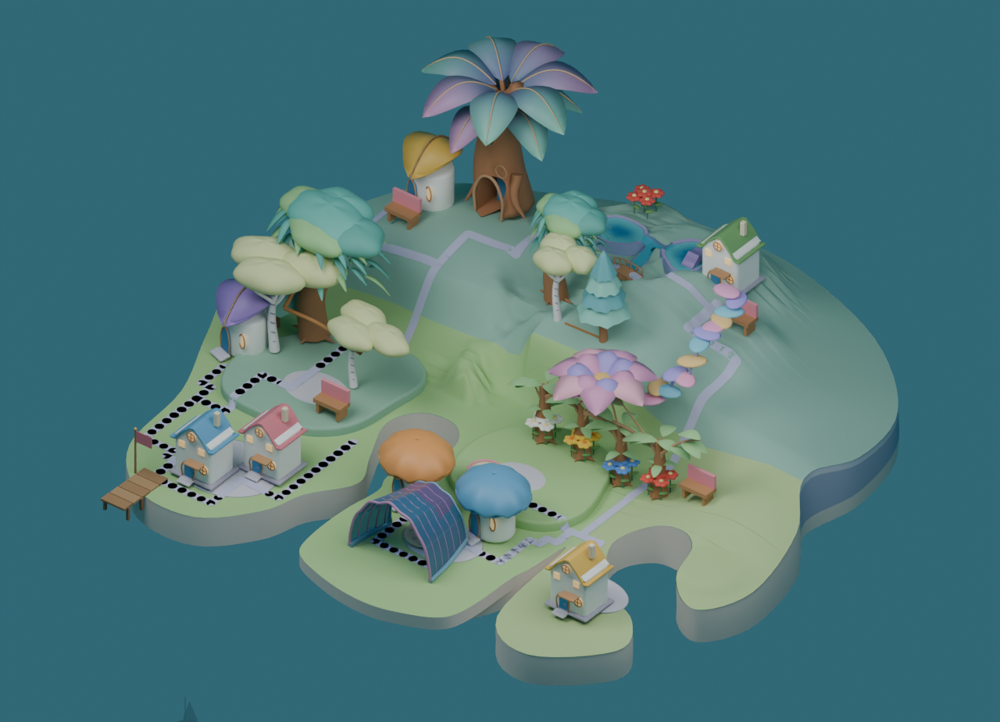

Version: authored-shoulder-c1:3fd164b9-6f32-4502-9ca5-dde6c5c1cbd7
DEV: 127.0.0.1:5358/prototypes/place-qa/authored.html?water=wide&cove=corner&shoulder=central&ground=source&reference=shoulder35（保存画像。旧serverは停止）
c1 actual visual candidate: native05-central-shoulder-sw-v3-source-v1+source-shading-v1
Observed Growing renderer flags: growingFeatureEnabled=true / nativeGrowingArt=true / authoredShoulderEnabled=true / authoredCoveEnabled=true
Launch flags: VITE_ISLAND_ENABLED=true / VITE_NATIVE_GROWING_ART=false（明示DEV候補でnative素材を読み込む）。保存した実画面の記録
全3案HOLD。本体への採用ではありません。 b1は次の粗形の方向のみ。3案は1280×925のsource renderで、c1の実cameraに対応するUI外の画角です。光・海・透過が異なり、住人は含みません。道の黒い点はexport差。画像リンクは未加工の原ファイルです。独立観察N=0。作者比較 · 制作と証拠


次は上・中・下の葉を非対称に重ね、幹下の明るい入口を残す。幹・根・所有と主景を固定し、支えと通路を同時に検査する。